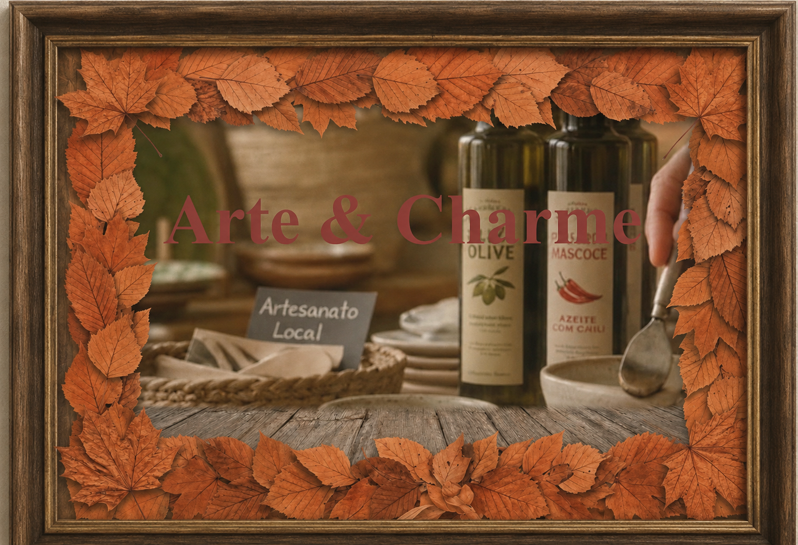
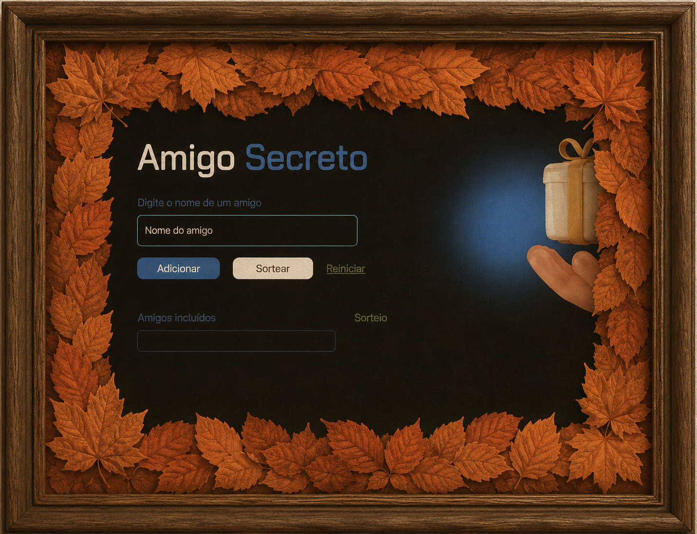

Portfólio
Explore as principais desafios e soluçoes que desenvolvi ao longo do ceuro de informatica na liberato
Primeiro Site

Segundo Site

GuiaRapido
Este é uma site que pode te ajudar dando algumas dicas do jogo hollow knight silkisonk
Acessar Site